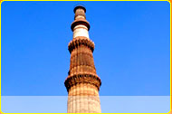
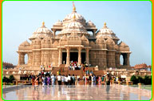
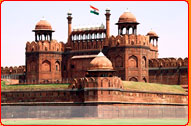

Qutub Minar
About 15 km south of Delhi, in Mehrauli, this 238 feet and 1 inch high Minar has been referred to as "one of the wonders of world". This soaring tower of victory was built immediately after the defeat of the last Hindu Kingdom in Delhi. Qutb-ud-din Aibak laid its foundation in 1200 A.D. Iltutmish added three more storeys. After damaged by lightning in 1368 A.D. Firuz Shah Tughlaq rebuilt the fourth story, added the fifth and a harp shaped cupola. A doorway in each storey opens to its own balcony. As of now, upper storeys are closed for visitors, yet it?s a treat to watch this magnificent travelmasti monument. Quwwat-ul-Islam Masjid, Iron Pillar and Alai Gateway are worth having a look. .

Akshardhaam temple
The main building at the centre of the complex is a 141ft high monument to Bhagwan Swaminarayan. Designed according to ancient Vedic texts known as the Sthapatya-Shastra, it features a blend of architecutral styles from across India. Within the monument, under the central dome, there is an 11ft high, gilded image of Bhagwan Swaminarayan. He is surrounded by the guru's of the sect. The building itself is constructed entirely from Rajasthani pink sandstone and Italian Carrara marble, and features no steel or concrete. It's height and location on the banks of the Yamuna mean its presence is felt from afar, and its carved details of flora, fauna, dancers, musicians and deities covering its surfaces from top to bottom, leave most visitors in awe. .

Red Fort
Built in almost 20 years (1639-1648), by the Mughal monarch Shahjahan, who shifted his capital from Agra to Delhi had a great significance in historical delhi. Built at a cost of Rs 100 lakhs, this imposing building in redstone has its walls that vary in height from 18 m on river (Yamuna) side to 33 m on the city side. Of the two gates, Lahore Gate and Delhi Gate, the former facing the Chandni Chowk is more imposing. The Lahore Gate faces to Lahore (now in Pakistan) and gives access to Chhatta Chowk (the vaulted arcade). Of the prime attractions in the fort are Diwan-i-Am (the Hall of Public Audiences), Diwan-I-Khas (the Hall of Private Audiences), Royal Baths, Shahi Burj, Moti Masjid (built by Aurangzeb in 1659), Khas Mahal, Rang Mahal, Mumtaz Mahal and Svatantrata Sangram Sangrahalaya. It was in the Diwan-i-Am, wherein a marble dias is said to have supported the famous Peacock throne of Shahajahan which was valued at some six million sterling and alas (!) was taken away by Nadir Shah when he looted Delhi in 1739. Do check about the timings of a Sound and Light show, held every evening.